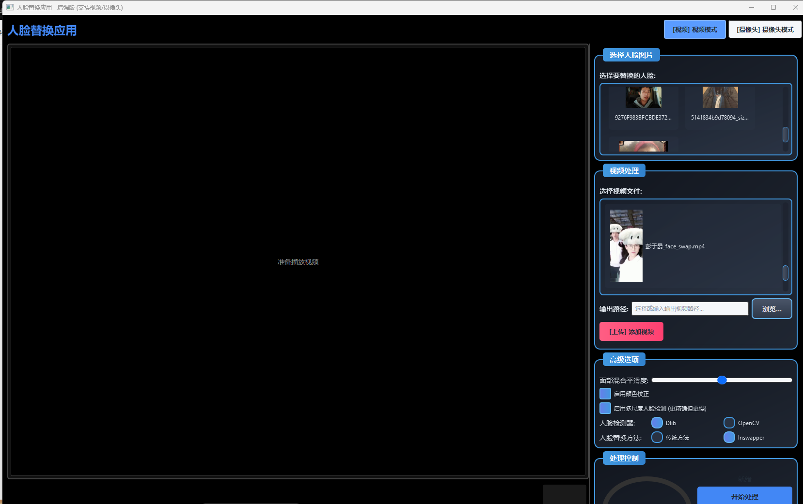

从算法调用走向系统化实现
人脸替换并不仅仅是单次算法推理。若要将其用于课程设计或毕业设计展示，还需要解决素材导入、参数配置、任务执行、结果预览、文件管理与交互反馈等工程问题。
人脸替换并不仅仅是单次算法推理。若要将其用于课程设计或毕业设计展示，还需要解决素材导入、参数配置、任务执行、结果预览、文件管理与交互反馈等工程问题。
本课题的意义在于把人脸替换能力封装为一个可运行的桌面系统，通过前后端协同、数据库记录和视频处理流程，体现软件工程方向毕业设计的综合实现工作量。
系统目标包括提供双模式操作入口，支持素材的统一管理与查询，完成处理结果的保存与回放，并在论文中以真实截图与真实样本数据验证实现效果。
这一部分对应论文中的需求分析与详细实现章节，重点展示系统实际具备的功能模块，而不是展示型宣传文案。
支持导入输入视频与目标人脸素材，完成读取、帧处理、输出写入与结果保存，适合展示完整的离线处理链路。
提供摄像头实时模式，用于课堂展示或答辩演示，重点体现前端交互、线程控制与实时显示的协同实现。
对人脸图片、输入视频等素材进行统一管理，避免演示时依赖手工查找文件，提高系统可用性与操作清晰度。
处理完成后可直接查看输出结果，便于在答辩时展示输入与输出之间的差异，并支撑测试部分的案例分析。
将素材和输出结果写入数据库，保留文件路径、时长等信息，形成可检索的记录，为系统化设计提供数据支撑。
通过界面提示、任务状态反馈和基础异常保护，降低演示过程中的中断风险，也为后续日志治理预留改进空间。
技术路线以“前端交互层 + 业务控制层 + 媒体处理层 + 数据持久化层”为主线，体现系统设计思路与模块间的数据流转关系。
展示内容只使用当前项目中的真实截图与样例图像，便于老师直接查看界面组织方式和处理效果的可视化结果。
界面中包含素材导入、模式切换、处理启动、结果展示和状态反馈等核心区域，是论文中“前端界面实现”部分的直接可视化补充。

测试口径以当前项目真实样本库和数据库记录为基础，不使用夸张的宣传式性能指标，重点验证系统闭环、数据记录与展示效果。
数据库中的人脸图片记录数
数据库中的输入视频记录数
输出视频入库记录数
输出目录中的实际视频文件数
统计时间为 2026 年 4 月 2 日 的本地项目样本数据，目的在于支撑毕业设计展示，不作为对外性能承诺。
结论部分保持毕业设计口径，强调已经完成的系统闭环、工程实现工作量以及未来仍需完善的部分。
课题价值不在单一算法指标，而在于把人脸替换能力封装成完整系统，体现前端交互、后台接口、媒体处理和数据管理的综合实现能力。